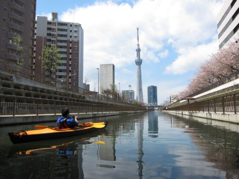

春の東京カヤック | 2014年4月 |
|---|---|
春です。桜が咲き誇る暖かい季節になりました。カヤックを始める時期です。 桜の季節、どこに漕ぎ出そうか悩むんですよね。桜が満開の時期は短いです。お休みも少ないです。貴重な休みでどこへ行こうか悩みます((+_+)) 今回チョイスしたフィールドは「東京」です。昨年もスカイツリー周辺を漕ぎましたが、桜の時期も良いらしいということで再びの登場です。 朝6時半静岡を出発。今回はmaruさんの新車で行きました。東名高速道路は混まずに行けましたが、首都高速に入ると渋滞です。ホント金を取っているのにスムーズに行かないとは。分かっていて乗る我々もですが。 | |
 他の艇もいっぱい〜 |  桜とカヤック |
| なんとか9時40分に大島小松川公園に到着。園内の桜が綺麗です〜 そして驚くべきは、川べりに多くのカヌーが！我々と同じフォールディングカヤックの人たちも多いです。 組立後、11時出艇。いや〜暖かい。気持ちいいな〜 スカイツリーまでは前回と同じコースです。旧中川から北十間川に入ります。 驚くべきことに、ここのコンクリートで囲まれた川にカワセミがいました。コバルトブルーに輝く綺麗な鳥です。私は撮影出来ませんでしたが、maruさんが撮影成功。 | |
|  北十間川からのスカイツリー |  ほぼ真下からにスカイツリー |
| 前回はやっていなかった護岸工事らしきものの横をすり抜け、遊覧船をかわし、昼のスカイツリー真下まで行きました。 天気が良いので、青空と白い鉄骨のスカイツリーが眩しいです。 ここから前回と違うコースで、横十間川に入り南下します。川幅30m位でしょうか、両側に低い建物が立ち並び、トタンの工場や家並みが下町の川って雰囲気のなかなか味がある風景です。 途中で、桜越しにスカイツリーを見ることが出来るポイントが有るのですが、ちょうどそのころ突如として黒い雲が現れ、雨が降り出してきたのです。急いで橋の下に逃げ込み雨をやり過ごします。 数十分で雨が止んだので、ツアーを続行します。桜越しのスカイツリーポイントは、曇り空でイマイチ。 我々が漕いでいる小名木川を東（旧中川）から西（隅田川）移動します。 この旧中川と隅田川、実は水位がだいぶ違います。西を流れる隅田川は東京湾とほぼ同じ水位で、東を流れる旧中川はそれよりも数m低いんですね。つながっていたら、当然高い方から低い方へ水は流れるので繋げちゃいけないのですが、小名木川で繋がっています。 どうなっているかと言うと、扇橋閘門という水門が有りまして、パナマ運河のように二つの水門の間で水位調整をして行き来できるわけです。すごいですね。 ところで、海面より低い川って、どこに流れているんでしょう？ | |
 桜越しのスカイツリー この後、雨が・・・ |  扇橋閘門の閘室 |
| 水門に近づくと、向こうから船が来るのでちょっと待ってと放送が流れます。 水門の周辺が泡立ち始め、水が湧き出している感じがしてきました。近くにいたら危険です。 水門がゆっくりと上に動きだし、船が出てきます。そして今度は我々が水門に入ります。入ると向こうにも同じような水門がある、コンクリートで囲まれた幅11m、長さ110mのエリア（閘室と言う）です。 我々の後ろから他の船も入ってきて、後ろの水門が閉まります。閉まると水門案内放送が流れ、だんだんと水が増え水位が上がっていきます。よく見ないと気が付きにくいのですが、壁に有る水位表示で水が増えていく様子が分かります。 水位が東側の隅田川方面と同じになると、前の水門があがり、隅田川方面に出られます。水門をくぐるときに上からの汚い水が垂れてきますので注意です。まあ、垂れるというよりジャンジャン降ってくるので避けようがないですが。 | |
 この水門、上から汚い水がバシャバシャと・・・ |  桜とカヤック |
| 水門を出ると十字路の交差点になっていて、左側に進路を取ります。 それにしても、東京って水路多いですよね。道路のように水路が張り巡らされている感じです。この小名木川も徳川家康が命じて作らせたそうです。 左に折れた大横川は、両岸に桜が咲き誇る桜並木でした。ちょうど良い時期で満開です。東京で花見、任務完了！ 帰りは同じように水門をくぐり、小名木川を漕いで出発地点に戻ります。この小名木川、真っ直ぐで代わり映えしない景色のため、非常につまらない。しかも長い。疲れもピークに達していてトイレにも行きたいし、ここだけは嫌々漕いでいました。 大島小松川公園到着は4時。実に5時間カヤックの上でした。漕いだ距離は16.2Km（GPS値）。いや〜今回は漕いだな〜疲れた。けど楽しかった！ | |
 水辺の桜並木とスカイツリー |  汚い水も青い空が映り込むと綺麗に見える |
| 写真＆コメント：べっしー | |